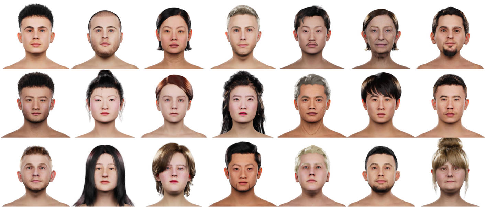

Jiawei Zhang
About Me
I am a final-year master's student at Nanjing University, currently looking for internship and Ph.D. opportunities.
Previously, I worked on scalable multimodal post-training and 3D computer vision.
I interned at OPPO Research, Microsoft Research Asia, and Microsoft Research.
I received my B.Eng. degree from Xidian University, and spent a wonderful time with my friends in Xi'an, China from 2020 to 2024.
I maintain a blog (in Chinese), where I write about my life and learning experience.
Feel free to reach out via email or
wechat.
Publications
(* indicates equal contribution)
Simplifying and Improving On-Policy Distillation for Few-Step Diffusion
Jiawei Zhang, Ziyu Wan, Nanye Ma, Long Zhao, Dong Chen, Hongyu Liu, Qifeng Chen, Dongdong Chen
Code Video Model
Contributor, Code Video Model Team
Lens-Image Technical Report
Core Contributor, Microsoft Lens Team
Bringing Your Portrait to 3D Presence
Jiawei Zhang, Lei Chu, Jiahao Li, Zhenyu Zang, Chong Li, Xiao Li, Xun Cao, Hao Zhu, Yan Lu
FATE: Full-head Gaussian Avatar with Textural Editing from Monocular Video
Jiawei Zhang, Zijian Wu, Zhiyang Liang, Yicheng Gong, Dongfang Hu, Yao Yao,
Xun Cao, Hao Zhu
HumanMAC: Masked Motion Completion for Human Motion Prediction
Ling-Hao Chen*, Jiawei Zhang*, Yewen Li, Yiren Pang, Xiaobo Xia, Tongliang Liu
Giving Faces Their Feelings Back
Yicheng Gong, Jiawei Zhang, Liqiang Liu, Yanwen Wang, Lei Chu, Jiahao Li, Hao Pan,
Hao Zhu, Yan Lu
TeRA: Rethinking Text-guided Realistic 3D Avatar Generation
Yanwen Wang, Yiyu Zhuang, Jiawei Zhang, Li Wang, Yifei Zeng, Xun Cao,
Xinxin Zuo, Hao Zhu
Fundamental Research

Towards Native Generative Model for 3D Head Avatar
Yiyu Zhuang*, Yuxiao He*, Jiawei Zhang*, Yanwen Wang, Jiahe Zhu, Yao Yao,
Siyu Zhu, Xun Cao, Hao Zhu
Undergrad
Click to expand
I was research intern in IPIU lab, Xidian University, focusing on raido-frequency machine learning techniques.
Towards the Automatic Modulation Classification with Adaptive Wavelet Network
Jiawei Zhang, Tiantian Wang, Zhixi Feng, Shuyuan Yang
AMC-Net: An effective network for automatic modulation classification
Jiawei Zhang, Tiantian Wang, Zhixi Feng, Shuyuan Yang
Projects
Versatile toolbox for human mesh recovery
Dec. 2025
Face editing pipeline based on GAN inversion
Feb. 2024
Honors & Award
Stars of Tomorrow, Microsoft Research Asia
Chinese National Student Scholarship for Postgraduates, 2024~2025, 2025~2026
Chinese National Student Scholarship, 2021~2022, 2022~2023
Kaggle: G2Net Detecting Continuous Gravitational Waves Silver Medal (Top 5%)
First Prize, China Undergraduate Mathematical Contest in Modeling in Shaanxi Province
Last updated: Oct. 2026